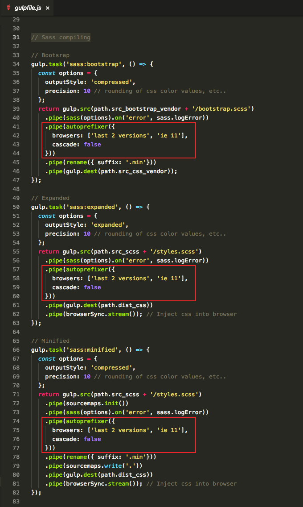

Docs
Vendor prefixes are not used inside SCSS instead we use Autoprefixer to handle intended browser support via CSS prefixes. After compilation CSS styles are passed through Autoprefixer to add necessary vendor prefixes. As you know vendor prefixes are important to ensure cross-browser compatibility of latets CSS3 features.
Autoprefixer is integral part of Gulp building process. So to customize its settings you need to go to gulpfile.js and find all instances of .pipe(autoprefixer({{ ... }). You will see browsers setting. It's currently set to ['last 2 versions', 'ie 11'] which reflects the browser set we retrieved from our Google analytics. Generally it's a good practice to collect some analytics about what Browsers/OSs your visitors use. And then customize Autoprefixer settings based on this data.
For more information about available Browserlist options visit https://github.com/browserslist/browserslist.
